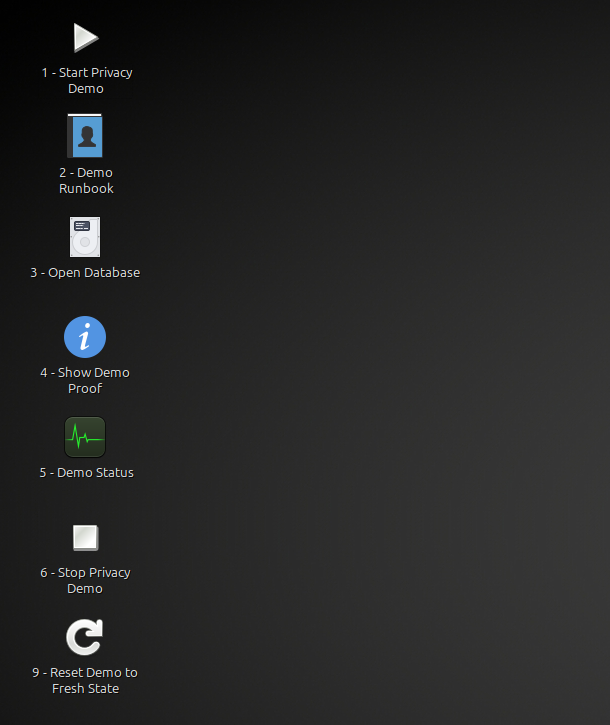
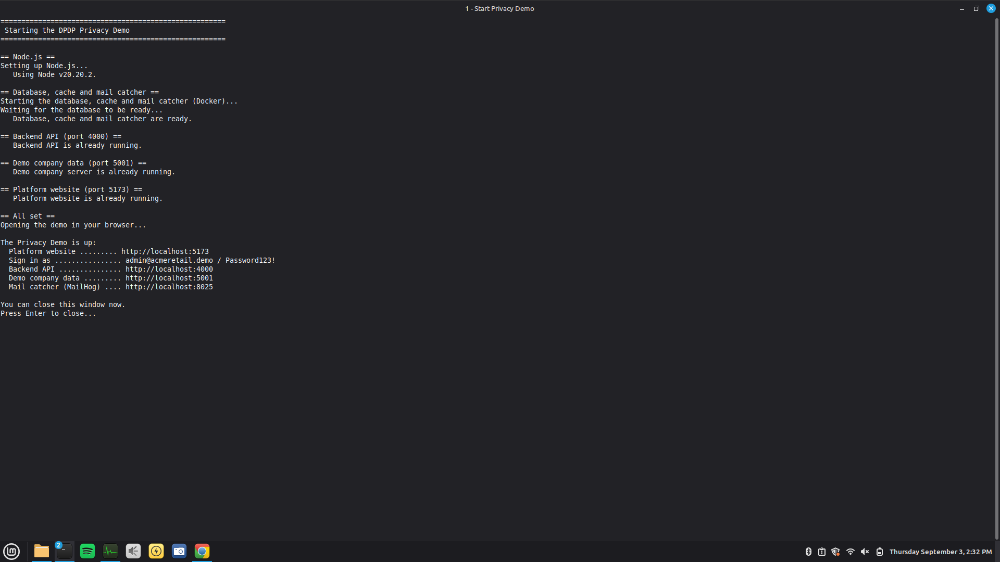
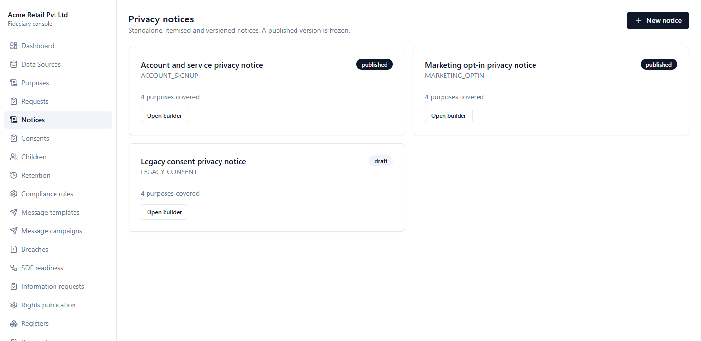
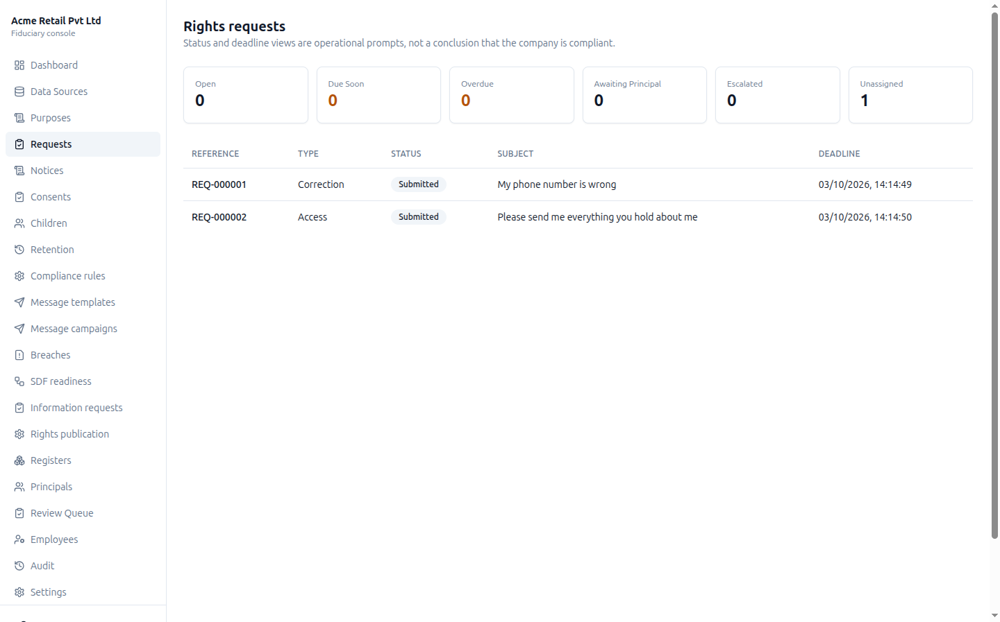
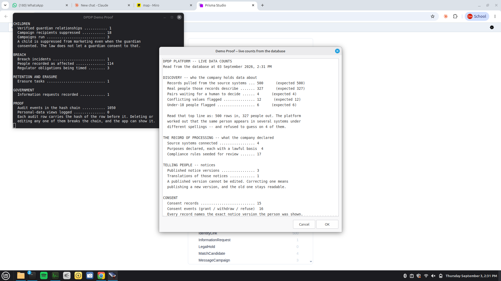
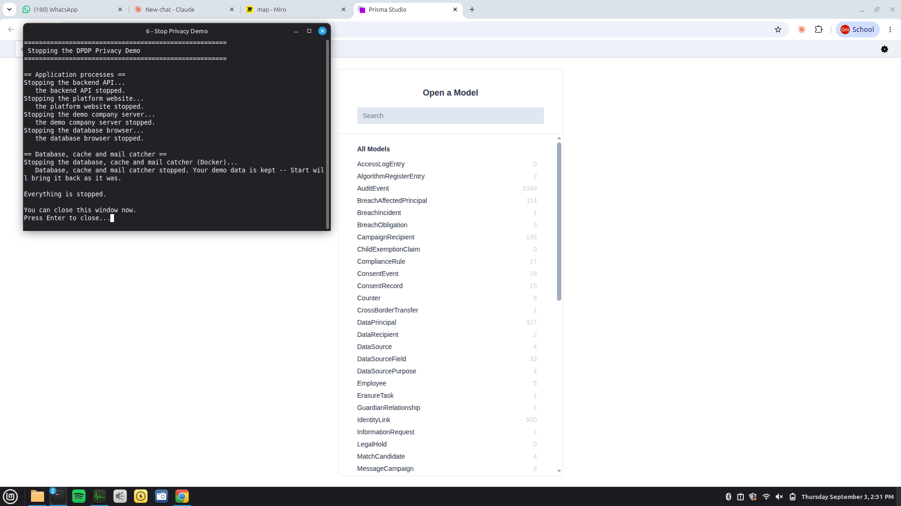

Before you begin: this is demonstration data
Everything in this workspace is fictional and exists only to make the product’s behaviour visible.
Acme Retail Private Limited is a sample organisation. Its 500 source records, 327 people, employees, customers, requests, consents, incidents and Government request are demonstration records. They are not production records and must not be treated as legal advice or as facts about a real person or company.
The environment is deliberately pre-filled so you can inspect complete workflows without entering dozens of forms first. In a client deployment, your administrators configure your organisation, source systems, purposes, lawful bases, notice wording, languages, roles, processors, retention policies, security measures and applicable compliance rules. The product then operates on your authorised data and policies.
The desktop launchers retain names such as Start Privacy Demo because this laptop hosts the evaluation environment. Those labels are not part of the deployed application.
What the platform solves
India’s Digital Personal Data Protection Act gives people rights over personal data and requires organisations to be able to demonstrate how those rights were respected.
Data Principal
The person the personal data is about: for example, a customer.
Data Fiduciary
The organisation that determines why and how that personal data is processed.
Most organisations do not have one customer database. The same person appears in marketing, sales, support and commerce systems under different identifiers and spellings. That makes apparently simple questions—“What do you hold about me?”, “Why?”, “Who received it?”, “Has it been erased?”—operationally difficult.
The platform connects to existing systems without writing back, resolves records into people, surfaces uncertain matches for human review, records processing purposes and sharing, manages notices and consent, tracks statutory workflows, protects children, runs breach clocks and preserves an auditable evidence trail.
Software supports compliance; it does not declare an organisation compliant. Legal interpretation, governance decisions and accountable approvals remain with authorised people.
Start the environment and sign in
From the Desktop, the environment takes about two minutes to become available.

Double-click 1 · Start Privacy Demo. Leave the black status window open until it reports that the platform is ready and opens http://localhost:5173.

At the staff sign-in page, use admin@acmeretail.demo and Password123!.

Open a second browser tab at http://localhost:5173/me/login. You will use it later to view the same workflows from an individual’s perspective.
Guided product tour
Follow the twelve stops in order. “Observe” describes the visible result; “Why it matters” explains the operational value; “Configuration” distinguishes sample choices from fixed product behaviour.
Four systems, one organisation
~90 secondsOpen Data Sources in the left navigation. Select a source to inspect its field mappings.

Each source has its own field names, connection state, last synchronisation and record count. Mapping makes unlike schemas comparable without changing the source.
An organisation cannot govern or answer for personal data it has not located. The inventory and processing register begin with evidence of where data exists.
Acme’s four connectors are samples. Your deployment defines its own supported endpoints, credentials, schedules, canonical mappings, processing purposes and read-only boundaries.
500 source records become 327 people
~2 minutesOpen Dashboard and review the headline figures.

A request about one person must reach all of that person’s records. Conflicting city values also become a visible accuracy queue instead of remaining hidden across systems.
The figures are from the fixed sample dataset. Matching policy, comparable fields and review thresholds are governance choices; the platform records those choices and never relies on a shared name alone.
Uncertainty goes to a person
~2 minutesOpen Principals, search for Rahul Verma, then open Review Queue.


An aggressive automatic merge could disclose one person’s records to another. The system makes uncertainty reviewable rather than hiding it behind a confidence score.
Your organisation selects the identifiers and thresholds it trusts. Review decisions are role-controlled, recorded and reversible.
Deadlines come from maintained rules
~90 secondsOpen Compliance Rules. Inspect a rule’s citation, effective date, parameters and review state.

A rule cannot silently weaken a statutory ceiling. Changes retain their source, effective period and approval history.
The included rules support this evaluation. In deployment, authorised compliance owners maintain the applicable citations, jurisdiction, effective dates, schedules and internal targets.
Clear, versioned privacy notices
~2 minutesOpen Notices, select the published marketing notice and switch its language to Hindi.



Consent evidence is incomplete unless it identifies what the person was told. Corrections create a new version; they do not rewrite history.
Acme’s wording, purposes and Hindi translation are samples. Your notice owners configure itemised data, purposes, goods or services, rights, contacts and supported languages, with approval before publication.
The individual sees their own information
~2 minutesSwitch to /me/login and sign in as aman.sharma@gmail.com with Password123!. Open My Data and Privacy Notices.

Aman can see the data connected to him, its purposes, notices, sharing and contact route. He cannot see internal staff-only notes or another person’s records.
Aman is a fictional sample persona. Production identity proofing, portal branding, contact routes and accessible fields are configured for the client organisation.
Rights requests with ownership and deadlines
~2 minutesIn Aman’s portal open My Requests. Return to the staff console, open Requests and select REQ-000001.



The workflow connects the public submission to an accountable owner, governing rule, deadline, evidence and a privacy-safe timeline.
Request types, intake channels, assignment rules, verification, escalation, response templates and service targets can be aligned to your operating model.
Consent is specific, evidenced and withdrawable
~2 minutesIn the staff console open Consents, then Retention.


Withdrawal is an event, not an overwritten checkbox. Downstream consequences remain traceable, including suppression and erasure review.
Acme’s marketing purpose and retention dates are examples. Your organisation configures purposes, notice versions, collection channels, campaign approval and retention rules.
Children are protected independently of consent
~2 minutesOpen Children, then open the marketing campaign’s recipients.


CHILD_MARKETING_PROHIBITED, even where guardian consent existed.Guardian consent does not override a prohibition on tracking or targeted advertising to children. The audience engine enforces that distinction and records why delivery was blocked.
Age evidence, guardian verification methods and eligible purposes follow the client’s approved policy; statutory prohibitions remain enforced.
Breach response with live regulatory clocks
~3 minutesOpen Breaches, select BR-000001 and review the affected population, notification, obligations and extension.


The incident’s “became aware” time drives distinct obligations. The notice requires all mandated elements and a second employee’s approval before dispatch.
This incident and Board reference are fictional. Clients configure incident roles, templates, approval paths, escalation contacts and current regulatory rules.
A restricted Government information request
~90 secondsOpen Information Requests and inspect the request naming Aman. Then confirm it is absent from Aman’s portal.

The organisation must preserve accountability without disclosing a restricted request through the person’s portal, access report or evidence file. Suppression is itself audited.
The authority, legal purpose and references are fictional. Production access is restricted by role and requires the client’s validated process.
Evidence that can be independently checked
~2 minutesOpen Audit Log, run Verify chain, then use Evidence to generate an individual evidence file or the organisation evidence pack.


Each audit event includes the previous event’s fingerprint. Removing or changing a historical event breaks subsequent verification. Evidence exports turn operational work into something an auditor can inspect.
Retention, export scope, permitted roles and organisation branding are configurable. Restricted information remains excluded according to policy.
What your organisation can configure
The sample is opinionated enough to explore immediately; a deployment is tailored through governed configuration.
| Area | Examples of client configuration | What remains controlled |
|---|---|---|
| Organisation and access | Legal identity, privacy contacts, branding, staff, roles and permissions | Separation between staff and individual access; auditable privileged actions |
| Data landscape | Source connectors, credentials, schedules, canonical mappings and match thresholds | Read-only source ingestion and human review of ambiguity |
| Processing register | Purposes, lawful bases, data categories, processors, sharing and transfers | Traceability from data to purpose and recipient |
| Communication | Notice wording, languages, templates, channels and approval workflow | Immutable published versions and evidence of what was shown |
| Operations | Request routing, owners, escalation, retention, incident roles and contacts | Deadlines, history, role checks and evidence |
| Rules | Jurisdiction, citation, effective date, parameters, internal targets and review | Version history and refusal of invalid weakening where enforced |
Configuration should be agreed with the client’s legal, privacy, security and operational owners. This guide demonstrates product capability; it is not a substitute for that design process.
Inspect the underlying data
These controls let you verify that the interface is backed by stored records.
Double-click 4 · Show Demo Proof. The window reads current counts from the API and database.

Double-click 3 · Open Database. Useful tables include SourceRecord, DataPrincipal, NoticeVersion, ConsentRecord and AuditEvent.

The database browser is capable of editing. Do not change a value: doing so may invalidate the guided state or the audit chain.
Sample access details
All accounts below are fictional and use Password123!.
| View | Account | What it illustrates |
|---|---|---|
| Staff admin | admin@acmeretail.demo | Full configuration and operational view |
| DPO | dpo@acmeretail.demo | Independent approval |
| Employee | employee@acmeretail.demo | Restricted request handling |
| Compliance | compliance@acmeretail.demo | Compliance operations |
| Auditor | auditor@acmeretail.demo | Read-only oversight |
| Individual | aman.sharma@gmail.com | Main portal journey |
| Individual | raj.patel@gmail.com | Granted consent |
| Individual | neha.rao@example.com | Granted then withdrew consent |
| Individual | sara.khan@example.com | Unaffected by the sample breach |
| Individual | vikram.n@gmail.com | Ambiguous identity kept separate |
Staff: http://localhost:5173/login · Individual portal: http://localhost:5173/me/login · Captured email: http://localhost:8025 · API documentation: http://localhost:4000/api/docs.
Finish safely
Close any database tab, then double-click 6 · Stop Privacy Demo. Wait for “Everything is stopped” and press Enter.

Button 1 restores the same state later. Button 9 is different: it destroys and reconstructs the sample workspace and can take about twelve minutes. Use it only when the environment owner asks you to rebuild the evaluation data.
If something looks wrong
| Symptom | Action |
|---|---|
| Website does not load | Wait 20 seconds, refresh once, then use 5 · Demo Status. |
| A page is blank or spinning | Refresh the page once. |
| Sign-in is refused | Confirm staff use /login, individuals use /me/login, and include the password’s exclamation mark. |
| A service is down | Run button 6, then button 1. |
| A launcher is untrusted (Linux) | Right-click it once and choose Allow Launching. |
| “Windows protected your PC” (Windows) | Choose More info, then Run anyway. This appears only the first time. |
| Database browser does not open | Start the environment with button 1 first. |
| Numbers differ | Record the observed values and ask the environment owner before resetting. |
Button 9 removes the current sample state. It is intentionally separated from the normal controls.